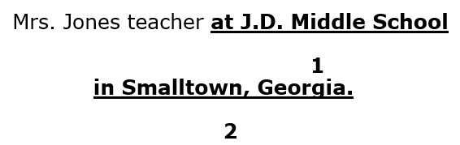

Exploring The Hunger Games Chapters 17-18

Read Chapters 17-18 and find out how Katniss survives The Hunger Games.
|
Chapters 17-18
Explain what Katniss realizes about her “first kill” on page 243. What new rule is announced at the end of chapter 18? Why do you think this new rule has been created? Why do you think Katniss responds to this rule by yelling Peeta’s name? Explain why part 3 of the novel is titled “The Victor.” Give at least three reasons. |


Callout
Prepositional Phrase
A prepositional phrase begins with a preposition and ends with a noun. It is not the subject, and it is not the action of the sentence. It is extra information added to the sentence to show a relationship of a noun or a pronoun to another word in the sentence.
Example:

The phrases labelled 1 and 2 are samples of prepositional phrases.
Participate in the Chat: List five prepositional phrases from the first paragraph of chapter 17.
|
Foreshadowing Sometimes an author will give subtle hints to things that may happen later in the story. This literary technique is known as foreshadowing. |
What do you predict might happen next in the story?